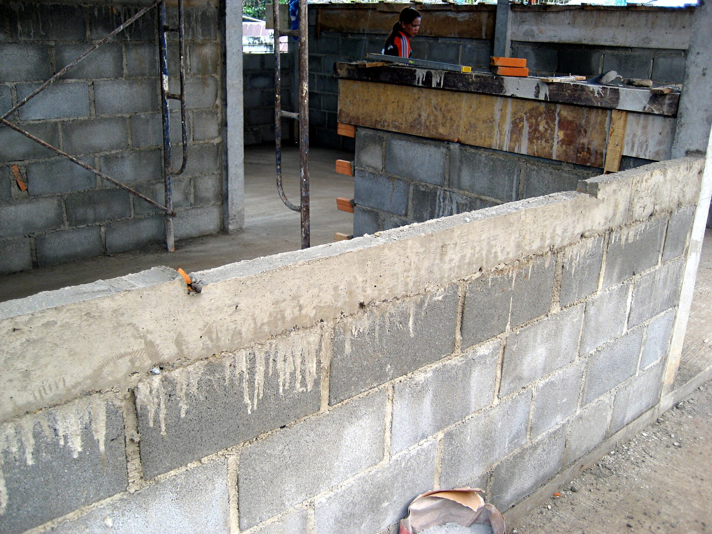

What Is Foundation Repair?
Foundation repair is the work of stabilising a house foundation that has settled, sunk, cracked or shifted, so the structure above it stops moving and is supported on stable ground again. It covers steel and helical piers driven beneath footings, lifting sunken concrete slabs, injecting cracks, supporting sagging crawl spaces and controlling the water that causes much of the damage in the first place.
You need it when the signs stop being cosmetic. A hairline crack in a new slab is usually nothing. A crack that keeps widening, a door that no longer latches, a floor that slopes, or a basement wall bowing inward means the soil under your house is moving the building, and that movement does not correct itself. Left alone, it generally gets worse and more expensive.
This page explains what foundation repair includes, the main methods and how they compare, the warning signs that separate a real problem from a cosmetic one, what repairs typically cost in published national ranges, and how FoundationMatch works. FoundationMatch is a matching service, not a contractor: we connect you with local foundation repair companies, and the inspection, quote and work all come from them.
Request a free inspection
What foundation repair covers: the main methods compared
Most foundation repair falls into a handful of established methods. Piering, also called underpinning, supports a settled footing on piers driven or screwed down to load-bearing soil or rock, and can often lift the house back toward level. Slabjacking raises a sunken concrete slab by pumping material underneath it. Crack injection seals leaking or structurally cracked walls. Carbon fiber straps reinforce a wall that is bowing. Crawl space jacks support sagging beams and joists. Drainage work, from regrading soil to interior drain systems, tackles the water driving the problem.
No single method fits every house, because the right repair depends on the cause. Piers answer settlement. They do nothing for a wall being pushed in by wet soil. Injection seals a crack but will not stop a footing from sinking. A competent inspection measures first, then matches the method to the movement, and a quote that names a method before anyone has measured your foundation is a quote to be careful with. The table below compares the main methods at a glance.
These methods are often combined on one house. A settled corner may get piers while the wall above it gets injected, and the gutters and grading that fed the problem get fixed in the same visit. Beware the opposite pattern: a single-method company tends to diagnose every house as needing whatever it sells. The diagnosis should drive the method, and the method should be explainable in one sentence: this moved, for this reason, so we are doing that.
| Method | What it fixes | Typical published cost | Expected life |
|---|---|---|---|
| Steel push piers or helical piers | Settled or sinking footings and slabs | $1,000-$2,500 per pier installed | Decades; designed as a permanent fix |
| Slabjacking (mudjacking) | Sunken driveway, porch, patio or slab sections | $500-$1,500 per section | Roughly 5-10 years in published guides |
| Foam lifting (polyjacking) | Sunken slabs needing a lighter, faster lift | $1,000-$2,500 per section | Longer than mudjacking; material does not wash out |
| Crack injection | Leaking or cracked poured-concrete walls | $500-$2,500 per crack, professionally done | Lasting if the wall has stopped moving |
| Carbon fiber straps | Basement walls bowing or cracking from soil pressure | Priced per strap after inspection | Permanent reinforcement once installed |
| Crawl space support jacks | Sagging floors, beams and joists | Quoted per jack after inspection | Adjustable steel; long service life |
| Interior drainage and sump system | Groundwater entering the basement | $2,000-$6,000 for most homes | Channel lasts for years; pump replaced about every 7-10 years |
What is the best foundation repair method?
The best method is the one that matches the cause of the movement: piers for a footing that has settled, injection for a leaking crack, straps or anchors for a bowing wall, drainage for water pressure. There is no best method in the abstract. Any company pushing one method for every house is selling its inventory, not solving your problem.
What is foundation underpinning?
Underpinning is the process of strengthening or extending a foundation so it rests on stronger, deeper soil. In home foundation repair it usually means installing piers beneath the existing footing and transferring the weight of the house onto them. It is the standard answer when shallow soil can no longer carry the load, and it can stabilise or partially lift the structure.
Signs you need foundation repair, and the thresholds that matter
Houses talk early. The common early signs are cracks appearing in drywall around door and window frames, doors and windows that start sticking, small gaps where walls meet ceilings or floors, and floors that feel slightly out of level. Outside, look for cracks in brick or mortar that step up in a staircase pattern, a chimney leaning away from the house, and soil pulling away from the foundation in dry weather. Any one of these alone can be innocent. Several together, or any one of them getting worse month by month, points to movement. Water is the trigger behind a large share of all of it, which is why the drainage section of this site matters as much as the piering section.
Thresholds help you judge urgency. Hairline cracks under about 1/16 inch in a concrete wall or slab are usually shrinkage from curing and are worth watching, not repairing. Worry more about cracks wider than 1/4 inch, cracks that are wider at one end than the other, horizontal cracks anywhere in a foundation wall, and cracks you can see daylight or water through. A floor that drops more than about an inch across a room deserves a professional look. And any sign paired with active leaking or a bowing wall moves the job from someday to soon.
Where signs appear depends on your foundation type. Basement homes show trouble on the walls first: horizontal cracks, bowing, water at the floor joint. Slab homes show it in the floors and door frames, and in cracks that run across tile. Pier and beam homes show it as sagging, spongy floors and skirting gaps. Knowing which type you have, covered on our foundation types page, helps you read the signs correctly instead of guessing.
What are the signs you need foundation repair?
The clearest signs are cracks wider than 1/4 inch or growing, stair-step cracks in brick, doors and windows that stick or will not latch, sloping floors, gaps between walls and ceilings, and basement walls bowing inward. One mild sign can be cosmetic. Several signs together, or any sign getting steadily worse, means the foundation is moving and should be inspected.
Can I just monitor a foundation problem instead of repairing it?
Yes, if the signs are mild and stable: hairline cracks that have not changed in a year, no sticking doors, no slope you can feel. Photograph cracks with a ruler and a date so you can prove whether they are growing. The moment a crack widens, a door stops latching, or water starts coming in, monitoring time is over and you need measurements, not guesses.
How long foundation repair takes and what it costs
Most residential foundation repair is measured in days, not weeks. A typical pier installation on one house takes two to five days, crack injection is often finished the same day, and slabjacking a driveway or porch usually takes a few hours. Larger jobs combining piers, drainage and wall work can run one to two weeks. Homeowners stay in the house during nearly all of it; the disruption is noise, some digging along the foundation line, and landscaping that needs putting back afterwards.
On cost, use published national ranges as your frame and any single quote as a claim to check against them. Piers run $1,000-$2,500 each installed, and most homes need somewhere between 6 and 14 of them, which is why a typical structural repair lands around $4,000-$12,000 all in. Slabjacking runs $500-$1,500 per section and foam lifting $1,000-$2,500. Crack injection by a professional costs $500-$2,500 per crack. The full breakdown by method, and the factors that push a job up or down, live on our foundation repair cost hub, which every page here links to.
What pushes a specific house up or down inside those ranges is mostly access and count. A house needing piers on one corner costs a fraction of a full perimeter job. Tight access, deep footings, attached porches and decks, and soil that forces piers deeper all add cost. So does combination work: drainage added to piering, or wall reinforcement added to a lift. That is why the same size house on the same street can draw very different quotes, and why the itemised breakdown matters more than the headline total.
How long does foundation repair take?
Most jobs take two to five days. Crack injection is usually done in a day, slabjacking in a few hours, and a standard pier installation on a typical house in two to five days depending on pier count and access. Big combination jobs with drainage and wall work can take one to two weeks. You can live in the house throughout almost every repair.
What type of foundation repair is most expensive?
Full piering of an entire house is usually the most expensive repair, because it combines the highest per-unit cost, $1,000-$2,500 per pier, with the largest count, often 12 to 20 or more piers on a full perimeter. Exterior excavation waterproofing is the other big-ticket item. At the cheap end, a single injected crack or one lifted slab section costs a small fraction of either.
Foundation repair or full replacement?
Replacement means demolishing the old foundation and building a new one under a lifted house. It is rare, slow and by far the most expensive route, and it is genuinely needed only when a foundation has failed beyond stabilising: severely deteriorated concrete, walls collapsed or displaced by inches, or a foundation that was badly built from the start. The large majority of homes with cracks, settlement and even bowing walls can be repaired in place, because piers bypass the weak soil entirely and modern wall systems can hold a wall that has moved considerably.
The honest middle case is a wall or footing so far gone that repair costs approach rebuild costs for that section. That is a judgement an inspector should support with measurements, photographs and a written explanation, not a sales line. If a company recommends replacement, get a second opinion and consider a structural engineer, because the price difference between repair and replacement is the biggest in this industry and the incentive to oversell it is real.
One more route sits between repair and replacement: rebuilding a single failed section. A wall that has collapsed or a footing that has crumbled can sometimes be rebuilt on its own while the rest of the foundation is piered or strapped. This is common with old stone or block foundations, where one stretch has deteriorated past saving but the remainder is sound. A good inspector will price this honestly as a hybrid, rather than selling you a whole new foundation.
Is foundation repair or replacement better for an older house?
Repair is better in almost every case, including older houses, provided the concrete or masonry itself is still sound. Piers, straps and injection can stabilise an old foundation without disturbing the house above it. Replacement suits only foundations that are crumbling, collapsed or severely displaced. An inspector should show you measured evidence before anyone talks about tearing your foundation out.
How FoundationMatch works
FoundationMatch is a matching service. We are not a foundation repair company, we do not send our own crews, and we do not set the price of your repair. You tell us what you are seeing and where you live. We match you with local foundation repair companies that cover your area and handle your type of problem. The company inspects your foundation, usually free, measures what is moving, and gives you a written quote. You compare, ask questions, and decide. Nothing obliges you to hire anyone.
The model exists because foundation repair has an information problem: quotes for the same house can differ by thousands of dollars, and a homeowner has no easy way to know whose measurements are honest. Getting two or three itemised quotes from companies competing for the same job is the simplest protection there is, and it is what our problem pages, cost hub and process guide are built to help you do. Start with the signs on this page, read the page for your specific problem, check the cost ranges, then request your match.
When quotes arrive, compare more than the totals. Check the pier count and where each pier goes. Check whether the method matches the diagnosis: piers for settlement, drainage for water pressure, reinforcement for a bowing wall. Check what the warranty covers, how long it runs, and whether it transfers to a new owner when you sell. A slightly higher quote with measured drawings and a transferable warranty is usually the better buy than the cheapest number on a single page.
FoundationMatch currently matches homeowners in the metro areas listed on our city pages, and every company in the network works under its own licence, insurance and warranty. If your problem turns out to be minor, a good inspector will say so; monitoring a stable hairline crack is a legitimate outcome of an inspection, and any company that treats a free inspection as a guaranteed sale is telling you something about itself.
- Describe the problem: cracks, sticking doors, sloping floors, water, or a wall moving
- Get matched with local companies that handle that problem in your area
- Receive a free inspection and a written, itemised quote
- Compare quotes line by line: pier count, method, warranty terms
- Hire the company you choose, or walk away with the information
Is FoundationMatch a foundation repair company?
No. FoundationMatch is a matching service that connects homeowners with local foundation repair companies. We do not employ repair crews, set repair prices or perform inspections ourselves. The company you are matched with does the inspection, writes the quote and carries out any work under its own warranty. Our job is the connection and the information that helps you judge the quote.
How much does it cost to use FoundationMatch?
Nothing. Matching is free for homeowners, and the inspection and quote from a matched company are typically free as well. You pay only if you choose to hire a company, and you pay that company directly under its own contract. If a quote arrives with charges you did not agree to before work starts, that is a red flag worth reporting to us.
Frequently asked questions
Does foundation repair fix the problem permanently?
Properly installed piers are a permanent fix for settlement, because they carry the house on soil or rock deep below the layer that moves with the weather. Injection and straps are lasting when the movement that caused the damage has stopped. Nothing is permanent if the water problem behind the damage is ignored, which is why drainage is part of most lasting repairs.
Can I live in my home during foundation repair?
Yes, in nearly every case. Crews work outside along the foundation line or in the basement and crawl space, water and power stay on, and most families carry on as normal. Expect noise during digging and hydraulic work, and plan to keep children and pets away from open excavations. Only rare full-replacement jobs require anyone to move out.
Does homeowners insurance cover foundation repair?
Usually not. Standard policies exclude settlement, soil movement, earth shifting and normal wear, which between them describe most foundation damage. A sudden, accidental event is different: a burst pipe that washes out soil under a footing can sometimes be covered. Check your policy wording, and do not let a contractor promise coverage on the insurer's behalf.
How do I know whether I need piers or just crack repair?
Crack repair suits a crack in an otherwise stable foundation, such as a shrinkage crack or one left by movement that finished years ago. Piers are for a foundation that is still settling or has dropped out of level. The test is measurement: floor elevations and crack monitoring over time. An inspection that measures will tell you which problem you actually have.
What is foundation stabilization?
Foundation stabilization means stopping a foundation from moving further, without necessarily lifting it back to its original position. It is often the smarter goal on older homes, where lifting can crack plaster, tile and rigid finishes that have adapted to the settled shape. Stabilization uses the same piers as lifting work; the difference is the target, holding level rather than recovering it.
How long do foundation piers last?
Steel push piers and helical piers are built to last for decades, and published answers commonly put helical pier service life at 75 years or more, well beyond the mortgage on the house. The steel is galvanised or coated against corrosion, and once a pier is seated on load-bearing strata it has almost nothing left to wear out. Warranty terms still matter more than headline lifespan.
Related guides
Request a free foundation inspection
Tell us where you are and what you are seeing — a local specialist will call you back to schedule it.
Prefer to talk first? [Call-tracking phone number to be added before launch]